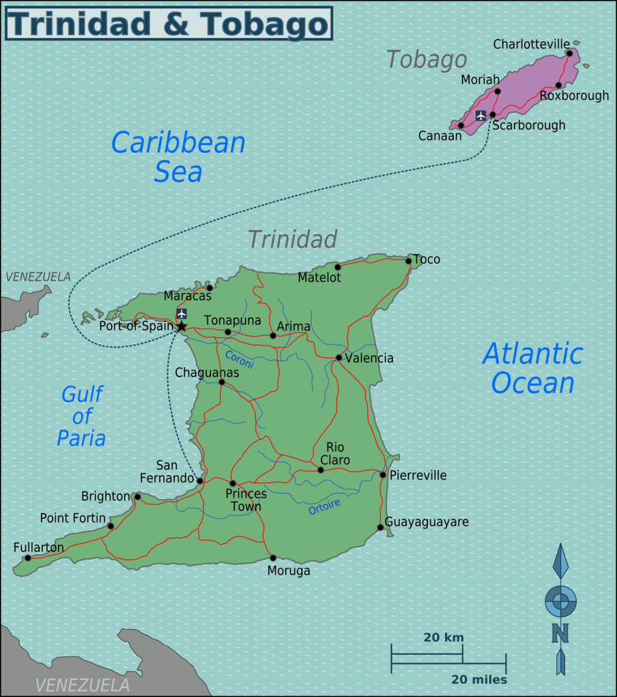

Similarities:
Both Trinidad & Tobago and Uganda have been ruled by Britain.
(more info on the countries is available in source 1 & 2)
Both are majority Christian.
(more info in pie charts below)
Differences:
Tribago 
o Demographics:
roughly half of Trinidad’s population today has African roots, other half has Indian roots (source 3)
Majority is Christian religion (source 2)
- Major Events in Tribago
- (⬇ info from source 3) 1884 “Peace Preservation” ordinance was passed by the governor which prohibited the use of any noisy instruments. This forced the citizens to get creative in order to continue playing music for Carnival. This was the spark that led to the invention of multiple instruments:
- Tamboo Bamboo (hollow tubes cut to different notes)
- Kalenda drums which were accompanied by stick fighting
- People started beating on trash bins in the streets as a form of percussion since drums were still banned.
- When was it discovered that dents produced different sounds in metal bins? There are many versions of the story, but several attribute it to Winston “Spree” Simon in the 40s
- Spree performed on his 14-note convex steel pan, nicknamed “ping pong”, in the 1946 Carnival. Playing Schubert's Ave Maria and other songs, Spree introduced the world to the musical abilities of this new instrument (source 4)
- In the same year (1946), Ellie Mannette was the first to make a 55 gallon concave steel pan (source 5), and that is how all are made today because it allows for all notes of the chromatic scale to fit on the single surface.
- Ellie was sent to England by the Tribago gov’t to show off this new instrument. There, he learned music theory on chromatics and harmonics. When he came back to Tribago in 1952, he used this knowledge to design and tune up a steel pan drum with all the notes of the western chromatic scales (more details in the technicalities section)
Uganda

o Demographics:
Uganda is a melting pot of different ethnic groups, with Baganda being the largest demographic (source 1)
Majority is Christian religion (source 1)
- Traditional Culture of Uganda
- (Source 6) Dr. Kyakuwa explains how traditional music and culture was during his childhood in central Uganda:
- music was used in a functional perspective
- music for a child to start to walk
- when they get their first tooth
- when they begin to crawl
- when you begin to play with others
- songs for hunting
- songs for lumber jacks
- songs for fisherman
- songs for dancing
- songs for weddings
- Music playing was always a community endeavor. Never a single musician performing for an audience; the audience always participated by either dancing, chanting, singing along, or playing the instruments with them.